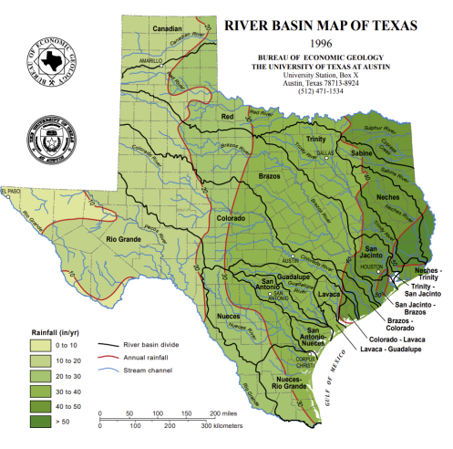
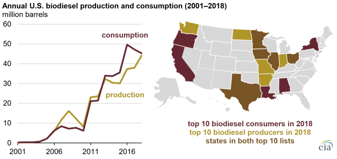

Power and Cooling for AI Data Centers // April 8th, 2026
Abstract
Our team seeks to replace traditional natural gas powered AI data centers in the San Marcos, Texas area with our transformative biodiesel powered biofuel centers. We have a promising, powerful blueprint for new cutting edge technology. Through introducing sustainable energy into the up and coming field of AI data centers, we plan to take the lead on reducing environmental costs. We hope to match the increase in demand for data centers by bringing a green point of view to this emerging industry to advertise to future stakeholders that the road to total carbon neutrality is shorter than we once thought. The projected power requirement is 350 MW for the planned 100,000 servers which is offset by an additional 70 MW of cooling. This energy will be sourced from biodiesel near our selected site.
Background
The rapid growth of artificial intelligence, cloud computing, and digital storage has increased the demand for electricity from data centers. These facilities need constant and reliable power not only to run servers but also to support cooling systems that prevent overheating. As technology advances, data centers are using more power than ever, puts pressure on existing energy infrastructure. At the same time, there is increasing concern about reducing carbon emissions from large energy users. Biomass and biofuel energy offer a renewable option that can provide steady power compared to some other renewables. This project explores whether biomass or biofuel power could realistically supply energy for a new data center in San Marcos, Texas, while reducing reliance on traditional fossil fuels. Having the power generation on sight allows for less energy transportation and better reliability of power supply to the servers in case of inclement weather conditions and other out of control situations. Allowing for the power generation and servers to be within the same plot of land will also reduce operating costs by limiting facility members while also allowing for the power generation to be placed where land acreage is cheaper.
To meet the high performance requirements of this facility, the projected electrical power demand without any overhead or PUE considerations is 350 MW. This estimate is based on the TDP of the GB200 superchip organized into 100,000 servers with a sustaining load of 3.5 kW each. While the equipment consumes the majority of this energy, the overhead for cooling systems accounts for an additional 70 million watts on our total of 350 MW for power.
From an economic standpoint, natural gas is far cheaper than renewable alternatives. As of 2025, natural gas averaged $3.52 per MMBtu while the median price for renewable natural gas alternatives are $20 per MMBtu. However the source of the biogas can vary the price extremely based on source and scale as it can range between $7 and $25 per MMBtu. Since the amount of energy needed for cooling systems is a miniscule percentage of the total energy needed, we omit the need to calculate needs for cooling and instead round up slightly. For reference, the energy needed for cooling is 0.005% of the total energy needed for the entire facility.
Environmental concerns are an important factor when considering power generation for a data center. Studies show that AI data centers require large amounts of electricity and water, which can increase carbon emissions and strain local water resources if not managed carefully. Rapid growth of data centers could significantly increase emissions and water consumption unless cleaner energy sources and efficient cooling technologies are used. Biomass and biofuel energy can reduce reliance on fossil fuels because the plants used for fuel absorb carbon dioxide during growth, helping offset emissions. However, biomass combustion can still produce air pollutants, and unsustainable 2 fuel sourcing may harm ecosystems, so proper emissions controls and responsible sourcing are important.
Local political response to data center development near San Marcos shows that community support and government approval are significant constraints for large energy and infrastructure projects. In early 2026, the San Marcos City Council voted 5–2 to deny a zoning change needed for a proposed AI data center after residents raised concerns about water consumption and environmental impacts, reflecting strong local political opposition when resource use and community well-being are perceived to be at risk.
Public health and safety concerns are important when considering data center power generation. Research suggests that rapid data center expansion can increase air pollution, water use, and energy demand, which may negatively affect nearby communities, especially those already facing environmental health challenges. These risks highlight the importance of emissions control, sustainable energy sourcing, and careful site planning to protect public health.
Biomass and biofuels have been used in energy systems for years, but their use specifically for large data centers is still developing. For example, Microsoft partnered with Enchanted Rock to use renewable natural gas made from food waste for backup power at its San Jose data center, and companies like Chevron and ExxonMobil are planning biofuel supply for data centers up to about 1 GW. These examples show growing commercial interest and early implementation, but large-scale deployment of biomass/biofuel as a primary power source for multi-gigawatt data centers remains limited.
Biomass-based energy systems must address significant thermal management requirements due to the combustion, gasification, or digestion processes generating large amounts of waste heat. These requirements can be filled by typical approaches used by conventional thermal plants, such as closed-cycle water cooling towers, air-cooled condensers, or hybrid systems that dissipate heat to the atmosphere while recirculating water through heat exchangers. In some cases, waste heat from biofuel generation can also be recovered and used for additional cooling through systems like organic Rankine cycles or absorption refrigeration that convert excess thermal energy into chilled water.
Power Subgroup
Fossil fuels such as natural gas have several advantages, including high energy density, reliable continuous power generation, and well-established infrastructure that makes them relatively easy and cost-effective to scale for large energy demands like data centers. However, they also have significant disadvantages, including the release of greenhouse gases and air pollutants that contribute to climate change and environmental harm, as well as reliance on finite resources that are not renewable and may face long-term supply and regulatory challenges
Biomass, defined as nonfossil organic material that has a characteristic chemical energy content, is not a new innovation. In the mid 19th century, biomass (primarily wood) supplied over 90% of U.S. power and energy. This renewable energy source began to decline in the early 20th century, however, as fossil fuels (such as coal and natural gas) rapidly grew in popularity. As populations increase, so does energy demand. When the general public was faced with oil and gas shortages beginning in the 1970s, the demand to find an equally powerful yet renewable energy source was back on the table. The demand for biomass and biofuel research continues to grow in order to combat the air pollution produced by fossil fuels. To directly generate power, biomass is gasified into its constituent components such as methanol, ammonia, and hydrocarbons. Emerging technology has even developed techniques to convert byproducts of biomass, such as hydrogen gas, into usable electricity when combined with solid-oxide fuel cells.
Biomass and biofuels offer several advantages, including being renewable energy sources from organic materials and generally producing lower net greenhouse gas emissions compared to fossil fuels. They can also support energy diversification and reduce dependence on finite resources. However, disadvantages include potentially lower energy density than fossil fuels, land use concerns for growing feedstock, and possible environmental impacts if biomass is not sourced sustainably.
Within Texas, there are multiple sources of biomass and biofuel. The primary biomass resources and their production values are: silage and grain corn (7,312,600 tons), soybeans (111,600 tons), wheat (1,008,000 tons), municipal solid waste (45,898,387 tons), logging residues (1.4 million dry tons), poultry (672,782,000 head), and livestock (17,090,000 head). While corn is a popular biomass and biofuel source, it turns out that Texas consumes more corn than it actually produces. So, for energy generation purposes, Texas imports corn from other states that have better climates for its growth. Therefore, due to economic reasons, solely relying on corn as a renewable power source isn’t as profitable as other alternatives. Biodiesel, on the other hand, is much more diverse because it is made from a combination of 4 vegetable oil (primarily from corn or soybeans) and animal fats. In 2018, Texas produced 226.8 million barrels of biodiesel, making it the second largest biodiesel producer in the United States. As of 2023, Houston’s RBF Port Neches LLC’s facility has the largest production capacity of biodiesel in the country at 144 million gallons per year - roughly 164 miles from San Marcos. While Texas consumes the largest amount of biodiesel in the United States at 336 million barrels, the industry continues to grow and expand to reach greater production possibilities. The heat sink source utilized for the power generation would be the two streams which go around San Marcos. Utilizing these streams which would have an initial temperature of about 22 degrees Celsius, which is the average temperature of the streams year round.
Cooling Subgroup
Air cooling is the traditional method used in most data centers because it is relatively simple, cost-effective, and compatible with existing infrastructure. Systems like hot/cold aisle containment and CRAC units are well understood and easier to maintain. However, air has limited heat capacity, making it less efficient for high-density AI workloads and leading to higher fan energy use as server power increases. Liquid cooling, including direct-to-chip and immersion systems, removes heat more effectively due to superior thermal properties and can significantly reduce energy consumption. The trade-offs include higher upfront costs and more complex system integration, though these challenges are increasingly manageable in modern designs.
Data centers historically relied almost entirely on air-based cooling, which was sufficient when server power densities were relatively low. As AI and high-performance computing have driven rack densities upward, traditional air cooling has approached its practical limits. Keeping the supply at 30 degrees Celsius is the target to ensure the chips remain within their operational limits as this gives a 42 degree return temperature for the liquid coolant. This has led to growing adoption of liquid-assisted and fully liquid cooling systems capable of supporting much higher heat loads while improving overall energy efficiency. Today, many advanced facilities use hybrid approaches that combine optimized airflow management with targeted liquid cooling to lower PUE and improve sustainability performance.
Cooling for such advanced systems required direct to chip liquid cooling to manage the thermal load they put out. To maximize efficiency, the system will utilize water standards, and maintain supply at a temperature around 30 degrees Celsius. This approach allows for a fully liquid cooled system that is more powerful than including a supplemental air cooled system. The hydraulic 5 infrastructure must support a total flow rate of 1.76 million LPM through a closed loop system with sealed connected parts that can ensure a reliable and robust cooling process without the risk of corrosion. Instead of only relying on refrigeration, the design aims to use the loop to transport the thermal energy away from the chips and repurpose it.
To maximize energy efficiency and reduce the environmental footprint of this facility, the project will implement variable frequency drives and every pump that allows us to align cooling with actual workload fluctuations. Chips will be active nonstop, however they are not always at full load, meaning we can adjust cooling as needed. Additionally a waste heat route can return water for local industry or agriculture processes.


This page is the Project Proposal, which was split into two groups where I was working in the cooling subsection. Any audits, changes, optimizations, calculations, or other parts of the project are removed to protect the privacy of my fellow classmates.
The following are links to assignments throughout this entire project. Keep in mind not everything is covered in this portfolio section and the assignments are here for reference.
Proposal Assessment